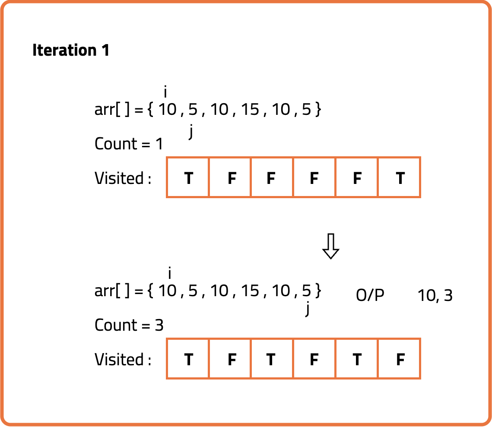
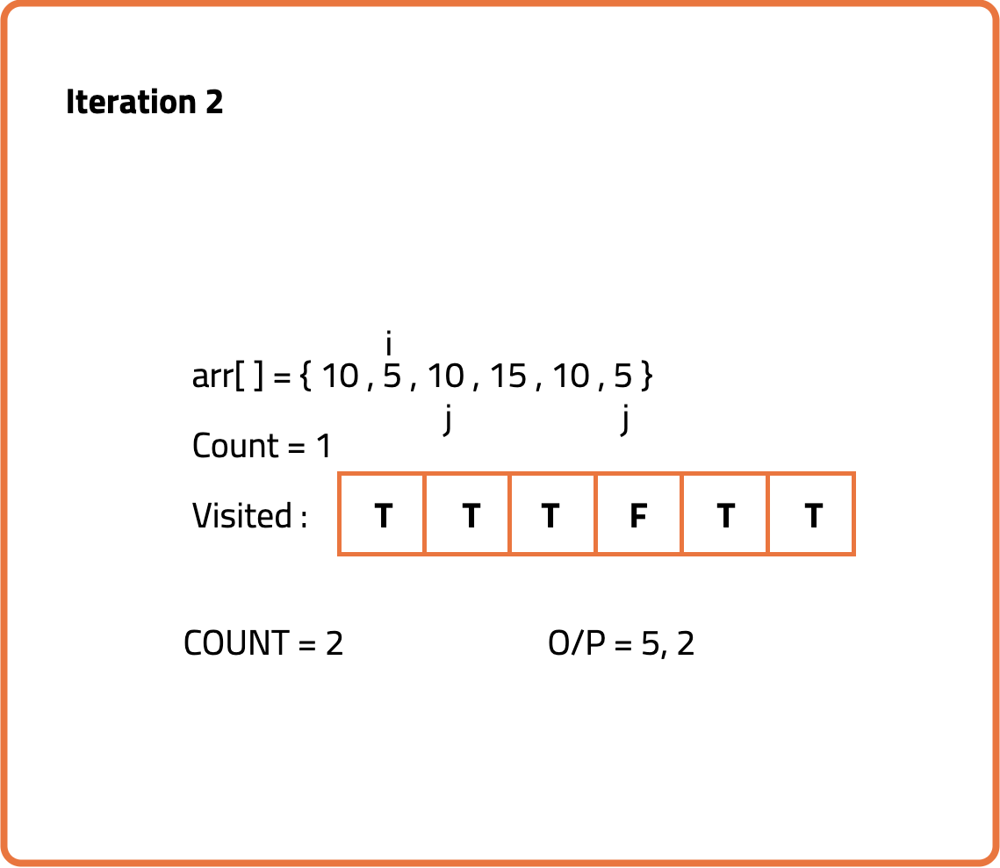
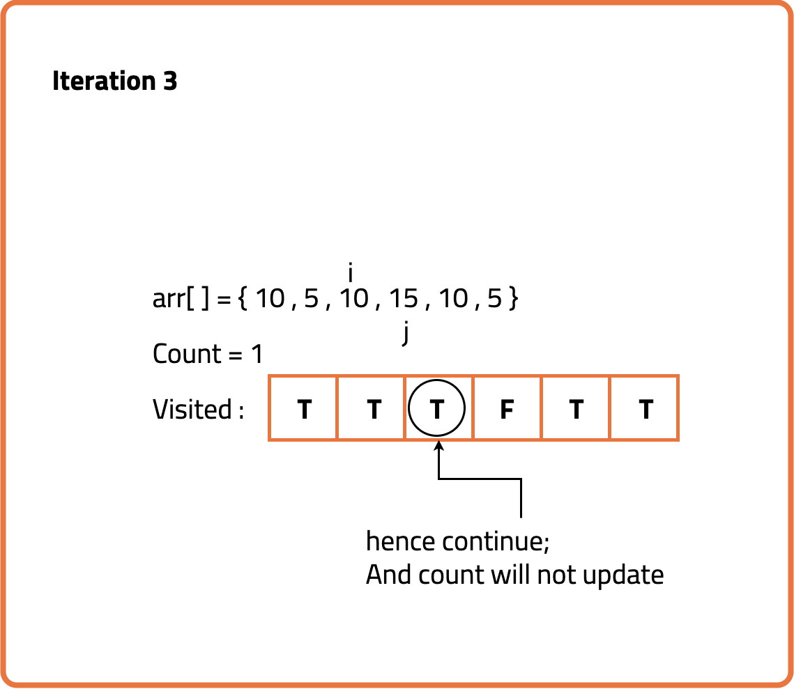
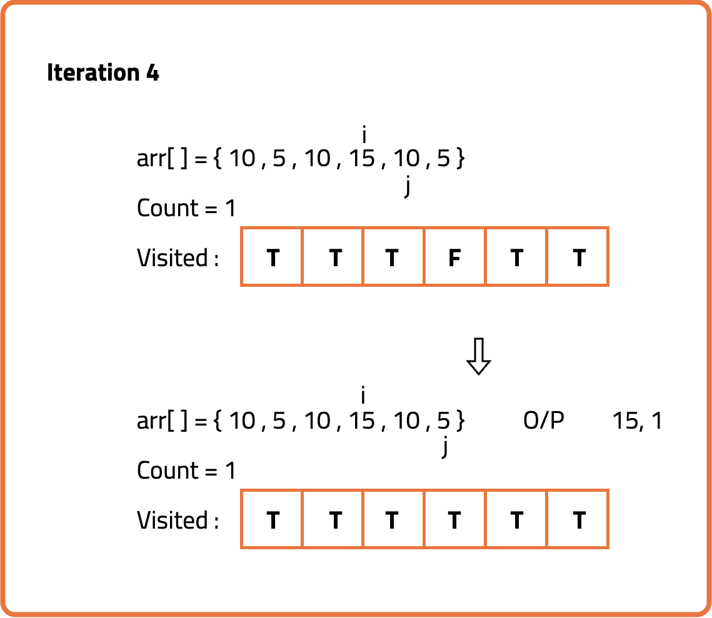
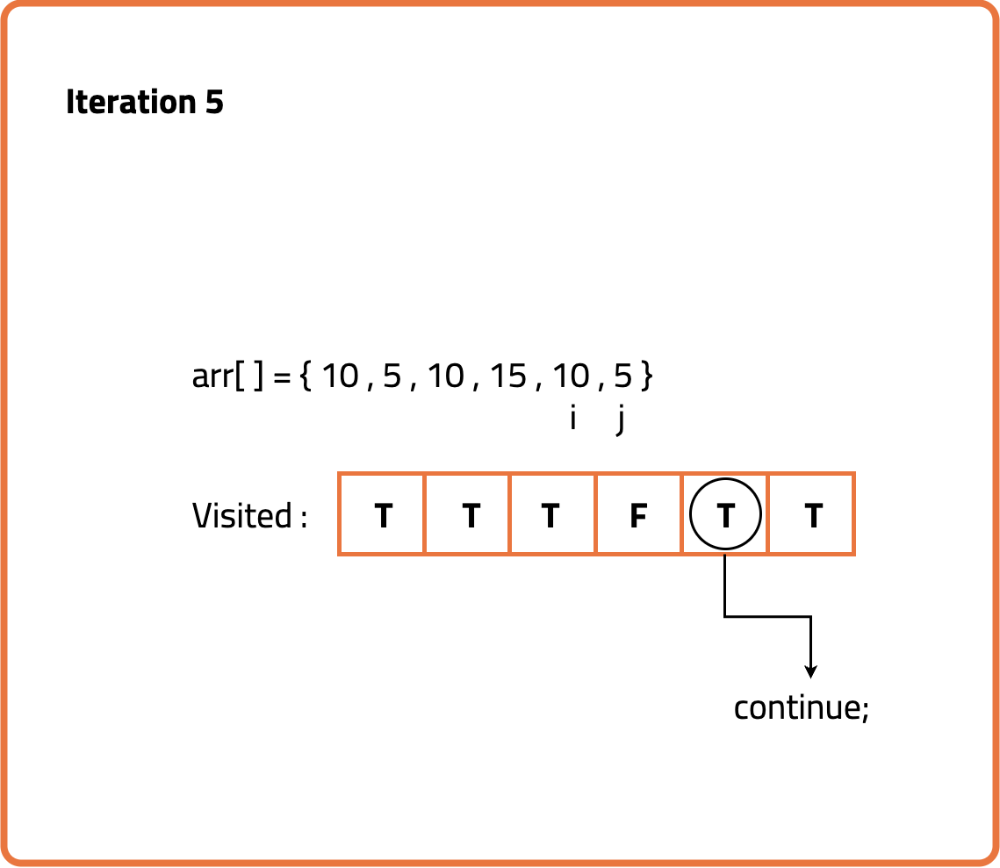
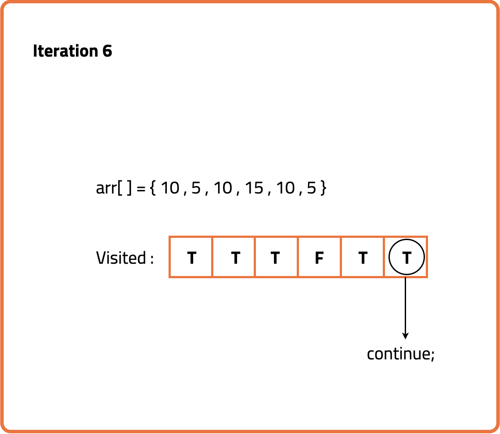

Count frequency of each element in the array
Problem Statement: Given an array, we have found the number of occurrences of each element in the array.
Examples
Example 1:
Input: arr[] = {10,5,10,15,10,5};
Output: 10 3
5 2
15 1
Explanation: 10 occurs 3 times in the array
5 occurs 2 times in the array
15 occurs 1 time in the array
Example2:
Input: arr[] = {2,2,3,4,4,2};
Output: 2 3
3 1
4 2
Explanation: 2 occurs 3 times in the array
3 occurs 1 time in the array
4 occurs 2 time in the array
Disclaimer: It's highly recommend trying to solve it before looking at the solution.
Brute Force Approach
Algorithm
We use a visited array of boolean values to keep track of which elements have
already been counted. For each element in the array, if it has not been visited, we iterate
over the rest of the array to count how many times it appears. After counting, we mark the
duplicates as visited to avoid recounting them.
The idea is simple: whenever we encounter an element, we check its frequency by scanning the
rest of the array. To avoid duplicate processing, we maintain a visited array.
This way, each element is processed only once when first encountered.






Code
#include <bits/stdc++.h>
using namespace std;
// Function to count frequency of each element in the array
void countFreq(int arr[], int n) {
// Create a visited array to mark elements that are already processed
vector<bool> visited(n, false);
// Traverse through all elements of the array
for (int i = 0; i < n; i++) {
// Skip this element if it's already processed
if (visited[i] == true)
continue;
// Count the frequency of arr[i]
int count = 1;
for (int j = i + 1; j < n; j++) {
if (arr[i] == arr[j]) {
visited[j] = true; // Mark arr[j] as processed
count++;
}
}
// Output the element and its count
cout << arr[i] << " " << count << endl;
}
}
int main() {
// Input array
int arr[] = {10, 5, 10, 15, 10, 5};
int n = sizeof(arr) / sizeof(arr[0]);
// Call the function to count frequencies
countFreq(arr, n);
return 0;
}
Complexity Analysis
Time Complexity: O(N²), as for every element we may scan the remaining elements in the array.
Space Complexity: O(N), for the visited array of size N.
Optimal Approach
Algorithm
We want to count how many times each element appears in the array. Using a hash map allows us to track frequencies efficiently as we traverse the array, avoiding the need for nested loops.
- Create an unordered_map to store element-frequency pairs.
- Traverse the array and for each element, increment its count in the map.
- After processing the array, iterate through the map and print each element along with its frequency.
Code
#include <bits/stdc++.h>
using namespace std;
// Function to count frequency of each element in the array using unordered_map
void Frequency(int arr[], int n) {
// Create an unordered_map to store frequency of each element
unordered_map<int, int> map;
// Traverse the array and count frequencies
for (int i = 0; i < n; i++) {
map[arr[i]]++;
}
// Traverse through the unordered_map and print frequencies
for (auto x : map) {
cout << x.first << " " << x.second << endl;
}
}
int main() {
// Input array
int arr[] = {10, 5, 10, 15, 10, 5};
int n = sizeof(arr) / sizeof(arr[0]);
// Call the function to count frequencies
Frequency(arr, n);
return 0;
}
Complexity Analysis
Time Complexity: O(N), where N is the number of elements in the array. Each element is processed once.
Space Complexity: O(N), for storing frequencies of unique elements in the unordered_map.